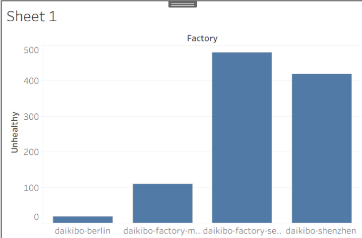
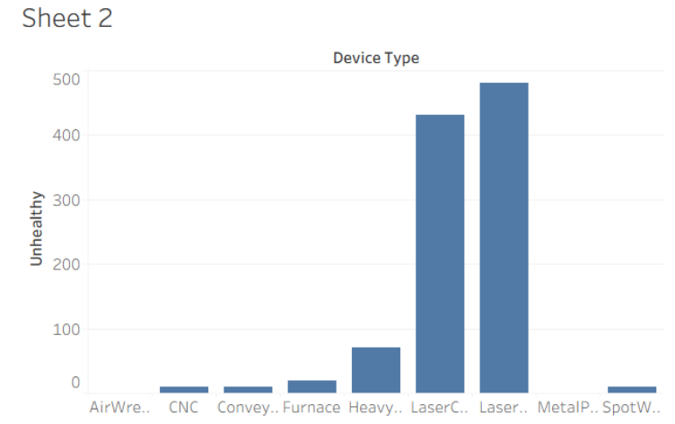
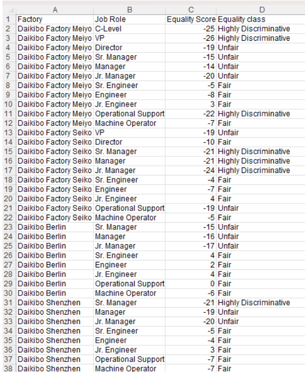

Daikibo Industrials is a global manufacturer of industrial machinery, operating four factories in Tokyo, Osaka, Berlin and Shenzhen. In this Forage simulation, I acted as an analyst supporting Deloitte's Technology and Forensics teams across two separate engagements for that client: a data visualisation project answering an operational question about machine breakdowns, and a forensic investigation into gender pay equality prompted by internal complaints. Both were completed independently and at my own pace, and the deliverables below are the ones I produced.
The two tasks were deliberately different, so using the same approach for both would have produced poor results. The telemetry task was exploratory: the client knew something was failing, but not where, so the deliverable had to help a non-technical reader find the answer independently. The forensic task was different. Deloitte's Forensic Technology team had already completed the analysis, and my role was to turn raw scores into a consistent board-ready classification. The main risk was not missing an insight, but applying the rule inconsistently across a dataset, with potential legal and reputational consequences.
That distinction set the approach for each. For the first, I invested in the data model and the interaction design; for the second, I invested in getting one formula exactly right and applying it identically to every row.
Daikibo provided one month of telemetry in a single JSON file, covering nine machine types across four factories in Tokyo, Osaka, Berlin and Shenzhen, with each machine reporting its status every ten minutes. Because nested JSON is not analysis-ready, the initial import was the most difficult part of the simulation: I had to check each schema level in Tableau to ensure the nested fields flattened into the expected columns rather than collapsing silently. Once the model was correct, the analysis depended on one derived measure: an "Unhealthy" calculated field that converted each unhealthy status message into ten minutes of estimated downtime, because each reading represented a ten-minute window of lost production.
From that measure, I built two bar charts: "Downtime per Factory" and "Downtime per Device Type". I combined them in one dashboard and set the factory chart as a filter, so selecting a site immediately narrows the machine chart to that site's equipment. This turns the deliverable from a static report into a tool: the client can reach the answer in two clicks without requesting follow-up analysis.

The second engagement arrived as a workbook of 37 role-and-location combinations, each carrying a gender pay equality score: an integer from −100 to +100 where zero is perfect equality. I added an "Equality class" column classifying each score by its distance from zero, using a nested IF built on ABS so that a score is judged on magnitude regardless of direction — within ±10 Fair, between ±10 and ±20 Unfair, and beyond ±20 Highly Discriminative.

Downtime is concentrated, not spread. Daikibo Factory Seiko in Osaka accounts for the largest share of estimated downtime across the month, and within the fleet a single machine type — the laser welder — dominates the device breakdown. The finding is actionable precisely because it is narrow: this is a maintenance decision about one class of equipment at one site, not a company-wide reliability programme.
Half the pay-equality picture falls outside Fair. Of the 37 role-and-location combinations, 19 classify as Fair, 11 as Unfair and 7 as Highly Discriminative — so 18 of 37, almost exactly half, sit outside the acceptable band.
The imbalance runs in one direction. 30 of the 37 scores are negative, one is exactly zero and only six are positive, and those six are small. This is not noise scattered either side of equality; it is a consistent tilt, which is what makes it a finding rather than a data quality artefact.
It is almost entirely a management-grade problem. Splitting the roles at the management line is stark: 16 of the 17 management rows (C-Level through Junior Manager) classify as Unfair or Highly Discriminative, averaging −18.9, against just 2 of the 20 engineering, operational and machine-operator rows, averaging −4.3. Junior Engineer is the only role that averages positive. Whatever is driving the gap operates on promotion and management pay, not on the shop floor.
One site is materially cleaner than the others. Berlin averages −5.5 with no Highly Discriminative rows at all, while Meiyo in Tokyo averages −14.4 with three. Berlin is the obvious place to look for what is being done differently.
The brief's worked examples did not agree with its stated thresholds. Following the examples and following the specification produce different classifications for scores sitting exactly on the ±10 and ±20 boundaries, and there is no way to satisfy both. I resolved it by following the specification, on the reasoning that a stated rule is the thing a board would be shown and held to, while a worked example is an illustration that can be wrong. It is a small decision, but on a dataset feeding a discrimination investigation, the boundary cases are exactly the ones that would be challenged, so the choice needed to be deliberate and recorded rather than accidental.
A second issue is one of coverage rather than calculation. The brief describes scores for "most job roles at every location", and the gap is not random: Berlin and Shenzhen carry no C-Level, VP or Director rows, and Seiko carries no C-Level row. Only Meiyo has the complete set of eleven roles. Since the senior grades are precisely where the scores are worst, the dataset may understate the problem — or those roles may simply not exist outside headquarters, which would be an entirely innocent explanation. Both readings are plausible from the data alone, and the honest move is to flag the ambiguity to the client rather than pick the more dramatic one.
The simulation covered the full arc of an analytics engagement rather than a single technique: framing a client's question, modelling raw data into a measure that did not exist in the source data, and choosing a presentation that lets a non-technical audience draw their own conclusions. Concretely, I worked with JSON connections, schema flattening, calculated fields, dashboard actions and cross-filtering in Tableau, and with ABS and nested IF logic applied consistently across a full dataset in Excel.
The more transferable lesson came from the forensic task. Precision matters more when the output carries legal weight; the brief itself is not automatically trustworthy, and a boundary case resolved carelessly is the one that gets challenged. Reading the specification critically before automating it turned out to be the part of the work that actually needed judgement.